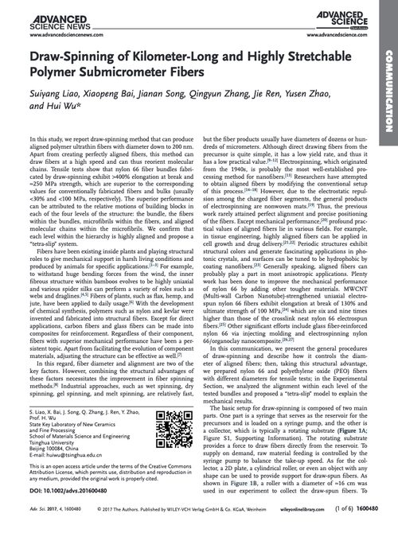

Draw-Spinning of Kilometer-Long and Highly Stretchable Polymer Submicrometer Fibers
Download paper
Placeholder link to a Google Scholar search until a PDF is added here directly.

Placeholder link to a Google Scholar search until a PDF is added here directly.
Comments
Comments need a Disqus account connected to this site before they'll appear here — see the note in chat for what's needed to turn this on.